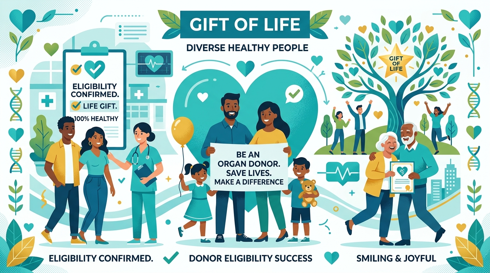
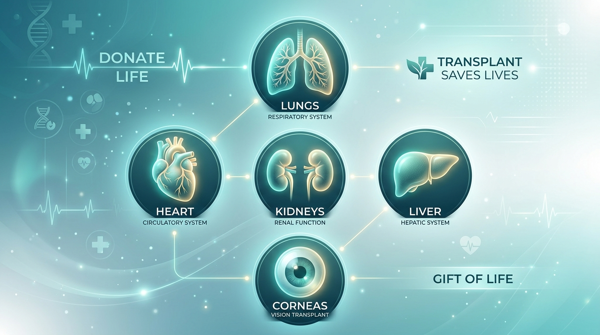

¿Qué es la donación de órganos?
Es el acto altruista, voluntario y gratuito mediante el cual una persona consiente que sus órganos o tejidos sean utilizados para realizar trasplantes que salvan vidas.
Es el acto altruista, voluntario y gratuito mediante el cual una persona consiente que sus órganos o tejidos sean utilizados para realizar trasplantes que salvan vidas.

Cualquier persona mayor de edad en pleno uso de sus facultades mentales puede ser donante en vida o después de su fallecimiento con la autorización de la familia.

Se pueden donar órganos como corazón, pulmones, hígado, riñones, páncreas e intestinos; y tejidos como córneas, piel, hueso y válvulas cardíacas.